Nahari, Kochi: things to do, food and stays
Nahari · Kochi
Nahari
Highlighted on the Kochi map.
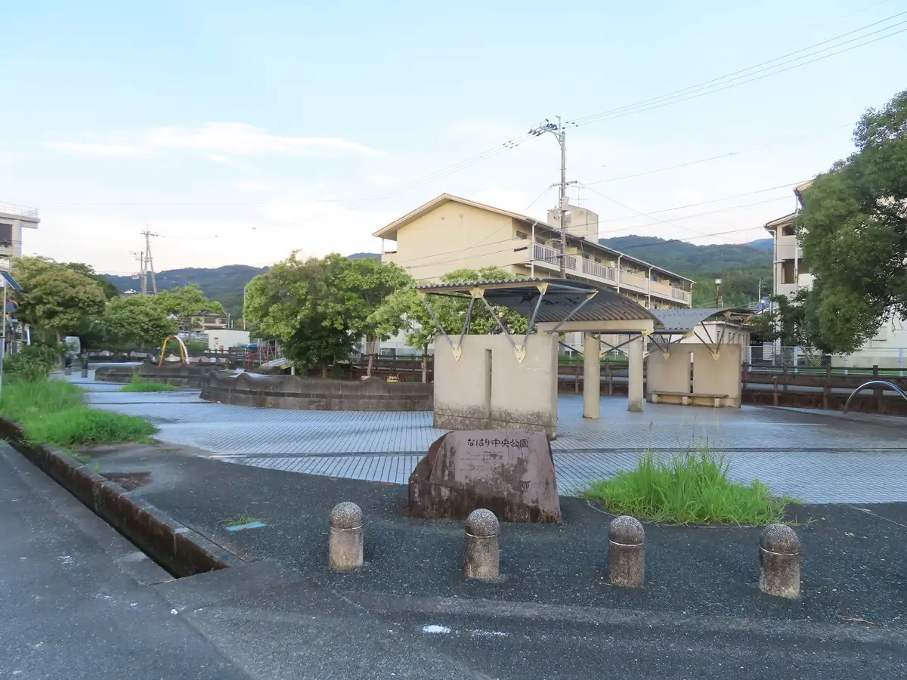
Stay
junos
junos
ＶａｃａｔｉｏｎＨｏｕｓｅ 朔 海街さんぽ道
VacationHouse Saku Umi Machi Sanpo Michi
Inn in Otsu, Nahari with one group per day.
ホテルなはり
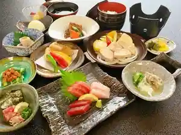
Hotel Nahari
Dining
ホテルなはり レストラン
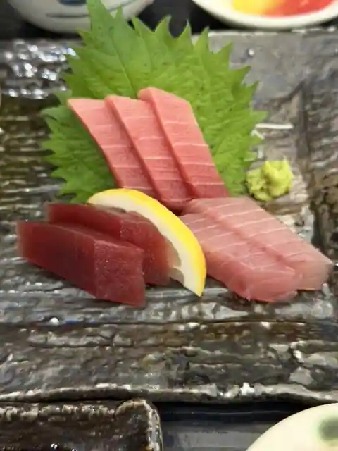
Hotel Nahari Restaurant
イタリア食堂トンノ
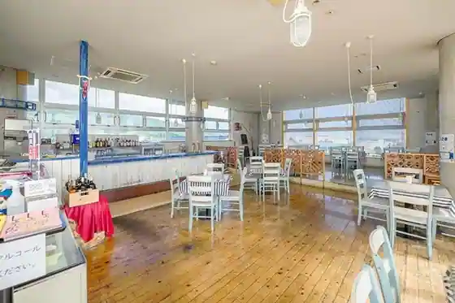
Itaria Shokudo Tonno
豚福亭
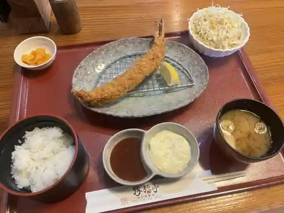
Buta Fukutei
Panse
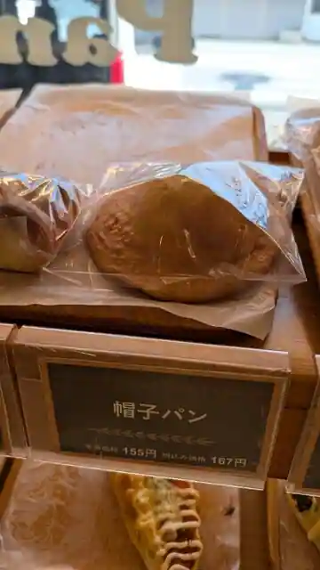
Panse
奈半利のおかって
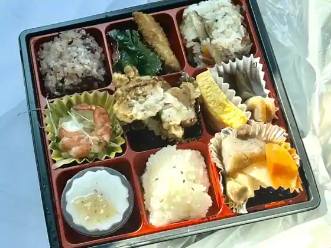
Nahari Nokatte
気ままスイーツ 甘音
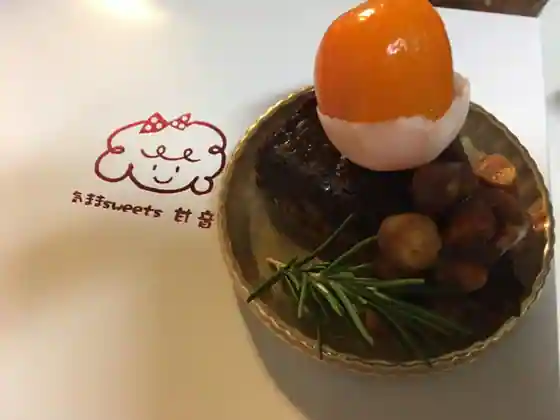
Kimama Sweets Kan Oto
ドライブインなぎさ
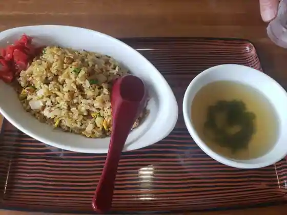
Doraibuin Nagisa
高田屋
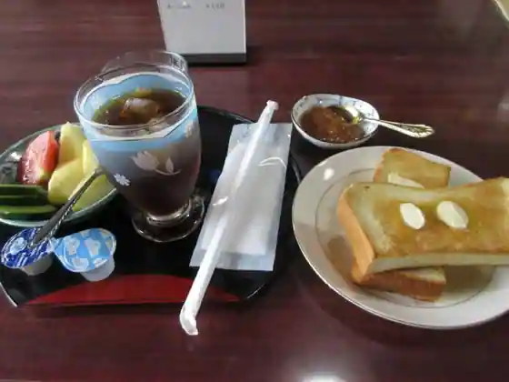
Takadaya
長門寿司割烹
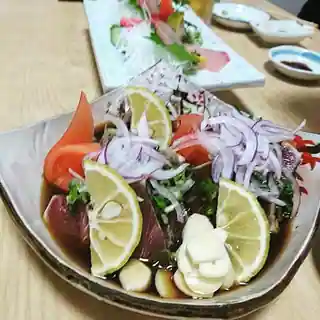
Nagato Sushi Kappo
喰いものや 合
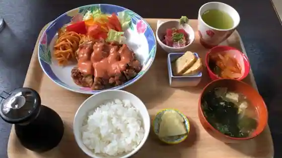
Kui Monoya Go
喫茶 スワン
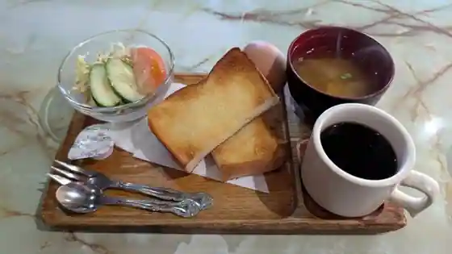
Kissa Suwan
ホワイト
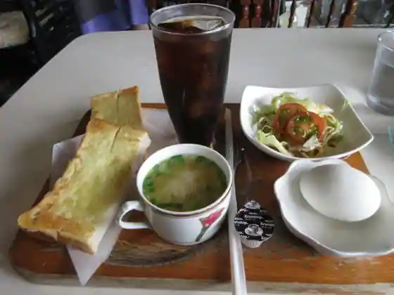
Howaito
笑福
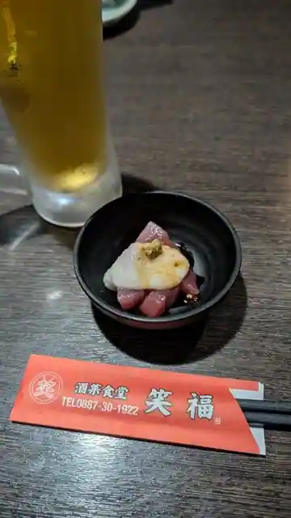
Warai Fuku
喫茶 メナド
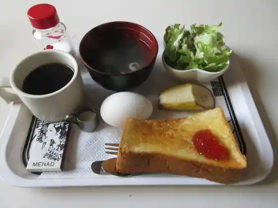
Kissa Menado
楽園
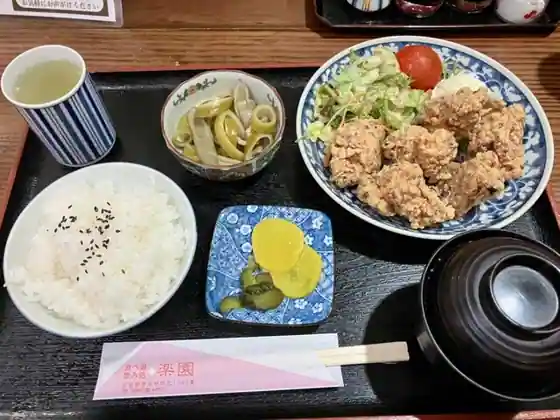
Rakuen
葉牡丹
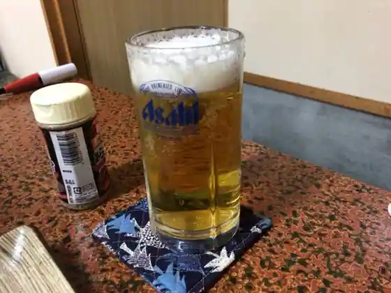
Ha Botan
西山料理店
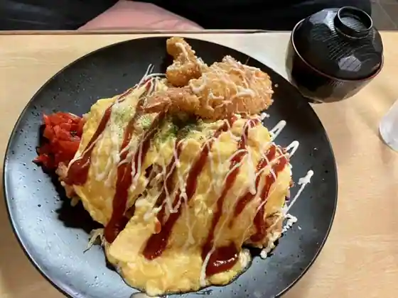
Nishiyama Ryori
スポット
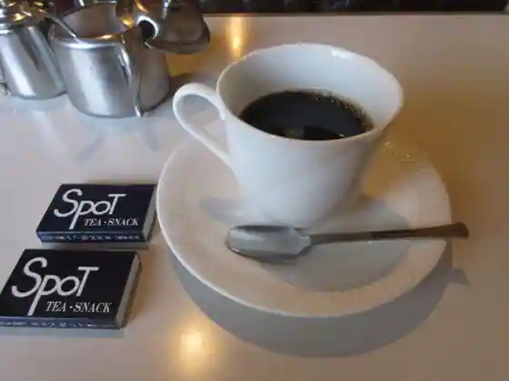
Supotto
Sights
Nahari Chuo Park
Karyogo Lighthouse
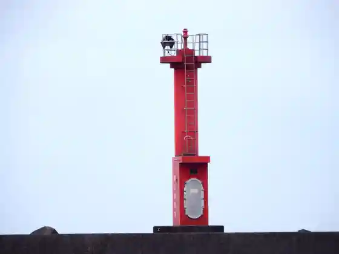
Nahari Kabuto
Nahari Minato Chobo
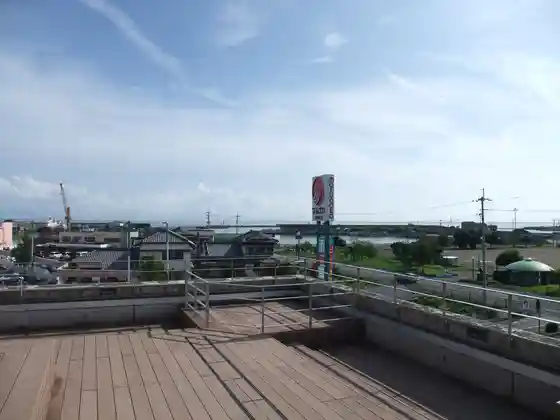
Nahari Eki
Nahari Town Hall
Nahari Tetsudo Hashi